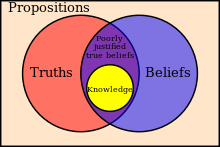

Socrates
Plato never speaks in his own voice in his dialogues; every dialogue except the Laws features Socrates, although many dialogues, including the Timaeus and Statesman, feature him speaking only rarely. Leo Strauss notes that Socrates' reputation for irony casts doubt on whether Plato's Socrates is expressing sincere beliefs. Xenophon's Memorabilia and Aristophanes's The Clouds seem to present a somewhat different portrait of Socrates from the one Plato paints. Aristotle attributes a different doctrine with respect to Forms to Plato and Socrates. Aristotle suggests that Socrates' idea of forms can be discovered through investigation of the natural world, unlike Plato's Forms that exist beyond and outside the ordinary range of human understanding. The Socratic problem concerns how to reconcile these various accounts. The precise relationship between Plato and Socrates remains an area of contention among scholars.
Pythagoreanism
Although Socrates influenced Plato directly, the influence of Pythagoras, or in a broader sense, the Pythagoreans, such as Archytas also appears to have been significant. Aristotle and Cicero both claimed that the philosophy of Plato closely followed the teachings of the Pythagoreans. According to R. M. Hare, this influence consists of three points:
- The platonic Republic might be related to the idea of "a tightly organized community of like-minded thinkers", like the one established by Pythagoras in Croton.
- The idea that mathematics and, generally speaking, abstract thinking is a secure basis for philosophical thinking as well as "for substantial theses in science and morals".
- They shared a "mystical approach to the soul and its place in the material world".
Pythagoras held that all things are number, and the cosmos comes from numerical principles. He introduced the concept of form as distinct from matter, and that the physical world is an imitation of an eternal mathematical world. These ideas were very influential on Heraclitus, Parmenides and Plato.
Heraclitus and Parmenides
The two philosophers Heraclitus and Parmenides, influenced by earlier pre-Socratic Greek philosophers such as Pythagoras and Xenophanes, departed from mythological explanations for the universe and began the metaphysical tradition that strongly influenced Plato and continues today. Heraclitus viewed all things as continuously changing, that one cannot "step into the same river twice" due to the ever-changing waters flowing through it, and all things exist as a contraposition of opposites. According to Diogenes Laertius, Plato received these ideas through Heraclitus' disciple Cratylus. Parmenides adopted an altogether contrary vision, arguing for the idea of a changeless, eternal universe and the view that change is an illusion. Plato's most self-critical dialogue is the Parmenides, which features Parmenides and his student Zeno, which criticizes Plato's own metaphysical theories. Plato's Sophist dialogue includes an Eleatic stranger. These ideas about change and permanence, or becoming and Being, influenced Plato in formulating his theory of Forms.
In Plato's dialogues, Socrates and his company of disputants had something to say on many subjects, including several aspects of metaphysics. These include religion and science, human nature, love, and sexuality. More than one dialogue contrasts perception and reality, nature and custom, and body and soul. Francis Cornford identified the "twin pillars of Platonism" as the theory of Forms, on the one hand, and, on the other hand, the doctrine of immortality of the soul.
The Forms
In the dialogues Socrates regularly asks for the meaning of a general term (e. g. justice, truth, beauty), and criticizes those who instead give him particular examples, rather than the quality shared by all examples. "Platonism" and its theory of Forms (also known as 'theory of Ideas;) denies the reality of the material world, considering it only an image or copy of the real world. According to this theory of Forms, there are these two kinds of things: the apparent world of material objects grasped by the senses, which constantly changes, and an unchanging and unseen world of Forms, grasped by reason (λογική).
The soul
For Plato, as was characteristic of ancient Greek philosophy, the soul was that which gave life. Plato advocates a belief in the immortality of the soul, and several dialogues end with long speeches imagining the afterlife. In the Timaeus, Socrates locates the parts of the soul within the human body: Reason is located in the head, spirit in the top third of the torso, and the appetite in the middle third of the torso, down to the navel.
Epistemology
Plato also discusses several aspects of epistemology. In several dialogues, Socrates inverts the common man's intuition about what is knowable and what is real. Reality is unavailable to those who use their senses. Socrates says that he who sees with his eyes is blind. While most people take the objects of their senses to be real if anything is, Socrates is contemptuous of people who think that something has to be graspable in the hands to be real. In the Theaetetus, he says such people are eu amousoi (εὖ ἄμουσοι), an expression that means literally, "happily without the muses".
Ethics
Several dialogues discuss ethics including virtue and vice, pleasure and pain, crime and punishment, and justice and medicine. Socrates presents the famous Euthyphro dilemma in the dialogue of the same name: "Is the pious (τὸ ὅσιον) loved by the gods because it is pious, or is it pious because it is loved by the gods?" In the Protagoras dialogue it is argued through Socrates that virtue is innate and cannot be learned, that no one does bad on purpose, and to know what is good results in doing what is good; that knowledge is virtue.
Politics
The dialogues also discuss politics. Some of Plato's most famous doctrines are contained in the Republic as well as in the Laws and the Statesman. Because these opinions are not spoken directly by Plato and vary between dialogues, they cannot be straightforwardly assumed as representing Plato's own views. Socrates asserts that societies have a tripartite class structure corresponding to the appetite/spirit/reason structure of the individual soul. The appetite/spirit/reason are analogous to the castes of society.
Rhetoric and poetry
Several dialogues tackle questions about art, including rhetoric and rhapsody. Socrates says that poetry is inspired by the muses, and is not rational. He speaks approvingly of this, and other forms of divine madness (drunkenness, eroticism, and dreaming) in the Phaedrus, and yet in the Republic wants to outlaw Homer's great poetry, and laughter as well.